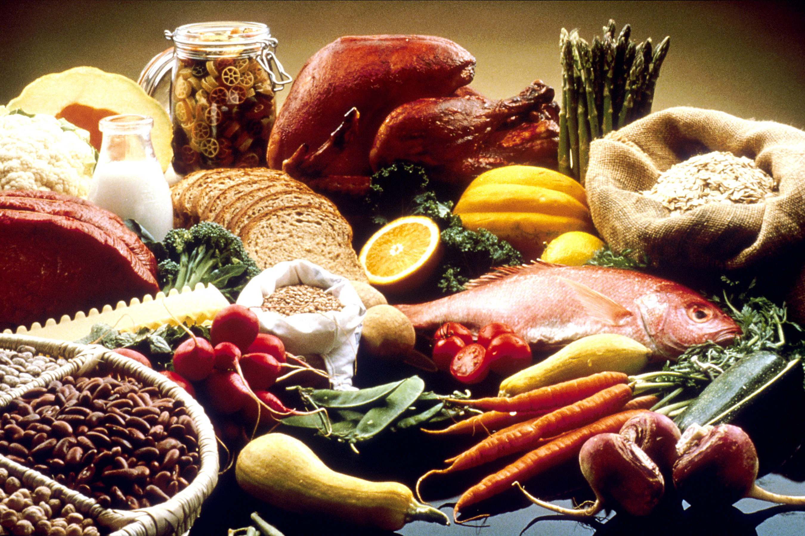
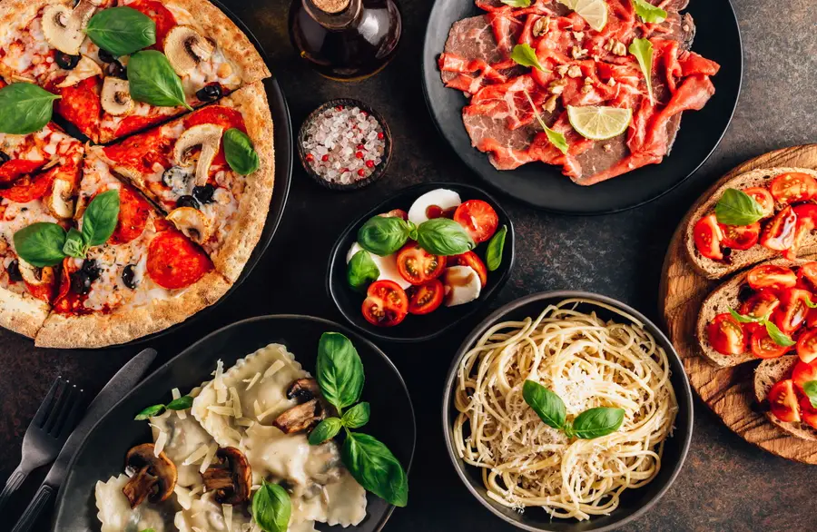
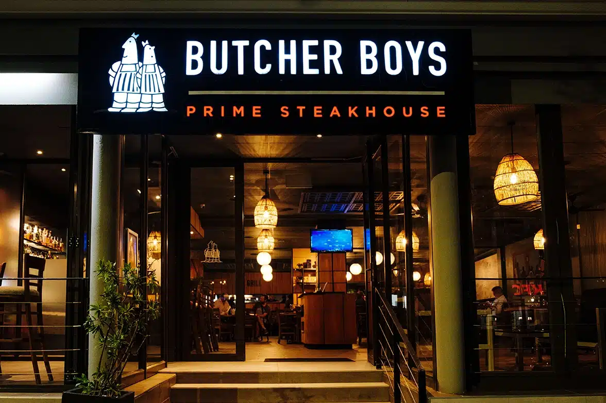

Virginia Woolf
“One cannot think well, love well, sleep well, if one has not dined well.”

Virginia Woolf
“One cannot think well, love well, sleep well, if one has not dined well.”
Virginia Woolf
“One cannot think well, love well, sleep well, if one has not dined well.”
Virginia Woolf
“One cannot think well, love well, sleep well, if one has not dined well.”
Claire Robinson
I am a 34-year-old food critic and photographer from Stellenbosch, South Africa, and the voice behind FoodieFanatix. I grew up in the Cape Winelands, cooking alongside my grandmother in a small farm kitchen. After studying Journalism at Stellenbosch University and spending five years as a magazine writer, I left my desk job in 2019 to follow my love of food around the world. Since then I have visited 42 cities on five continents and reviewed more than 300 restaurants, from Michelin-starred dining rooms to late-night street food stalls. I photograph every plate I eat and rate each meal on food, service, atmosphere and value. My reviews are honest but kind, and I always orders what the locals recommend. When I am not travelling with my camera and notebook, I am at home in Cape Town, planning my next trip.
The Butcher Boys Cape Town, South Africa
The Butcher Boys is a lively steakhouse in the heart of Cape Town, with Table Mountain as its backdrop. The restaurant is known for prime cuts of beef, flame-grilled to order and served in a warm, modern setting with dark wood and an open grill. It’s a favourite with locals and tourists for a relaxed dinner or a special night out.

Kaze Izakaya Tokyo, Japan
Kaze Izakaya is a small, eight-seat Japanese pub in Tokyo, tucked away down a narrow, lantern-lit alley. The chef prepares every dish right in front of the guests, so each meal feels personal and full of energy. After work it fills with locals, which makes it a true taste of everyday Tokyo life.
Forno Vecchio Naples, Italy
Forno Vecchio is a family-run pizzeria in the old centre of Naples, the city where pizza was born. Three generations of the same family have baked pizzas in its century-old wood-fired oven. The restaurant is loud, cheerful and always busy, with simple, honest Neapolitan food at its heart.
Maré Azul Lisbon, Portugal
Maré Azul is a breezy seafood restaurant on the Lisbon waterfront, overlooking the Tagus River. Fresh fish and seafood arrive straight from the fishing boats each morning. With blue-and-white tiled walls, ocean views and friendly service, it captures the relaxed charm of Portugal’s capital.